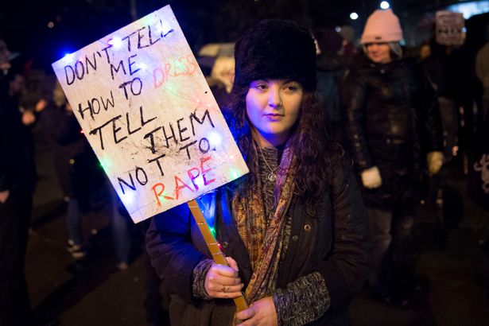
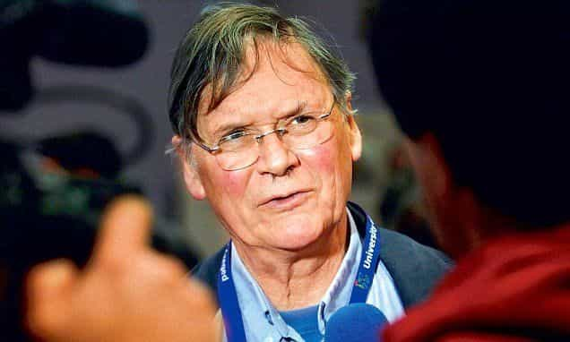

< < < Back
3 Hard Truths The ROK Meetup Outrage Revealed About The World – Return Of Kings
It is no great secret that Roosh is a man of unfashionable opinions. However, whatever your stance on his views is, you have to admit that any honest and unbiased reading of his work would render the notion that he is a “pro-rape advocate” as a ridiculous overreach of reason.
It is simply an establishment fabrication that Roosh and the men on this website are advocating rape, designed to silence and malign us in the eyes of the public and discredit the real talking points we have to make about the kind of drunk society we live in.
However, as ridiculous and histrionic as this media attack is, we should in a sense feel a sort of congratulatory smugness. We have, after all, rustled the ideologies of the globalist elite in such a way that they are now feeling nervous and insecure, which is precisely why they have set out to shut our movement down by inciting worldwide hatred and furor through the one weapon that is completely in their control: the “free” press.
It seems that the “perfect” narrative provided by Roosh and friends has been one that is simply too irresistible not to misconstrue. Here you have an “obscure corner” of the Internet, populated by mostly white men, fiercely voicing out their concerns against loose women, feminism, and cultural dilapidation, a situation far too easy to characterize as misogyny and RAPE CULTURE rather than address the real concerns that Western men and women are facing.
And so in one of the most ironic episodes of 2016, the media has rushed to paint game practitioners and cultural traditionalists with the one broad stroke of a “rape mob,” while deftly ignoring the real rape mob that they were personally responsible of orchestrating in European cities this past New Year’s Eve. If this is not one of the press’s most intellectually dishonest moments in history, I don’t know what is.
1. The mob is alive and well

A Roosh V protester in Cardiff, UK.
If there ever was a recent time when one could become disillusioned with the current intellectual state of humans, it would be now. Even given the false headlines, the fabricated labels of “pro-rape” and “rape legalization,” and the ignorant and uninformed opinions of journalists and even government officials, all this should serve to a hypothetically-enlightened citizen of the “Age of Reason” is to exercise his skeptical muscle and verify if those claims are really true based on their sheer outlandishness.
What have the people done instead? They’ve gotten on Twitter, Facebook, Instagram, and even government-petitioning platforms in order to “fight rape” and have even gone to the lengths of organizing rallies and real-life protests against these so-called rapists. They’ve expended finite portions of their life for a false cause when in fact if they had bothered to do more than ten minutes of research they could have saved themselves all of this effort, energy, and outrage.
They have doxed Roosh’s family, have made gruesome death and, hypocritically, vicious rape threats towards the man and his followers, and have terrorized the comments section of many of his articles, pictures, and videos.
There is no mistaking it: in the technological 21st century, education, critical-thinking and the free flow of information has not gotten rid of the mob, it has merely made it bigger, more efficient, and even more vicious.
2. Women don’t care about freedom of speech

Nobel Prize-winning biochemist Tim Hunt has had to learn a thing or two about free speech from women.
One interesting component of this outrage episode is who the people standing up for free speech are. Why are women not mounting rational arguments against his satirical article? Where are the widespread intellectual pieces by women proposing more thought experiments on the subject of rape, or discussing what extent of personal responsibility should society demand from its women?
I am not seeing them. I am not seeing women engaging in the use of free speech to dismiss views that they consider to be “outrageous,” for that would at least be a respectable and admirable use of their time. What I am seeing, however, is the complete opposite.
I am seeing more and more women demanding the expansion and intrusion of government into the policing of speech, ideas, and free thoughts. I am seeing more and more women dismissing any and all arguments against their preconceived notions of radical feminism based solely on their ability to call any and all opposition out as misogynists, rapists, and male chauvinists.
Women have petitioned governments to either deny Roosh entry into their country or prohibit his meetings. They are effectively saying “This man disagrees with our views, so instead of respecting diversity and tolerance and engaging him in a civil discussion, we will sulkily demand someone else to take him out of our country because he offends our delicate views and sensibilities.”.
If this sort of reasoning continues to gain ground with politicians, media agents, and members of our society, we will soon live in a place where any disagreement with a female figure will lead to government prosecution.
And such a statement is incredibly telling, it serves to tell the world that these women are in fact so privileged, so indulged, and so full of themselves that they believe that they should not face scrutiny, opposing opinions, or any sense of personal accountability, because in their mind the blame rests on someone else and it’s not on them to challenge themselves.
3. Journalists are dishonest, biased, and incompetent
Mainstream media loves to load their headlines with ridiculous assumptions about men. One can’t help but laugh.
Perhaps the most important takeaway from this incident is the fact that journalists have proven themselves to be incompetent, mediocre crackpots. As shown by the man himself, the majority of articles published on Roosh all made the same false claims, all made biased, personal judgements of character, and almost all served to launch the journalist’s vitriol at the object of interest and to highlight the journalist’s own sense of moral superiority to the reader.
It is at this point that one has to stop and wonder what has become of journalists.
I hope I am not the only one to find this deplorable. And it is precisely why I thoroughly enjoyed Roosh’s press conference, in which he took them to account for their lies and misgivings, and later memorably blurted out at a dishonest journalist: “Do you lift?”
Once you watch this conference, it becomes obviously clear that the press knows almost nothing factual about Roosh and they do not care to do so, because they are not interested in reporting truth, just marketable outrage.
I highly recommend it, as it is both entertaining and informative, and will prove to the readership of this site and to any other honest person to be one of the most visceral instances of—to use the press’s very own terminology—“rape” to be caught on film.
Read More: Why The Media Manufactured Outrage Against Our Meet Up